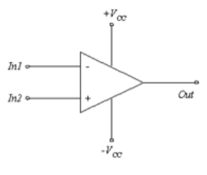

1 Agustus 2023
Penguat Operasional
Pengertian Op-Amp (Operational Amplifier)
Operational Amplifier atau lebih dikenal dengan istilah Op-Amp adalah salah satu dari bentuk IC Linear yang berfungsi sebagai Penguat Sinyal listrik. Sebuah Op-Amp terdiri dari beberapa Transistor, Dioda, Resistor dan Kapasitor yang terkoneksi dan terintegrasi sehingga memungkinkannya untuk menghasilkan Gain (penguatan) yang tinggi pada rentang frekuensi yang luas.
Op-Amp sering disebut juga dengan Penguat Operasional. Secara ideal Op-Amp memiliki impedansi masukan dan penguatan yang tak berhingga serta impedansi keluaran sama dengan nol. Dalam prakteknya, Op-Amp memiliki impedansi masukan dan penguatan yang besar serta impedansi keluaran yang kecil. Op-amp memiliki simbol seperti yang terlihat pada gambar.
Secara garis besar, terdapat 4 pin utama dari Op-Amp, yaitu masukan inverting (tanda minus), masukan non-inverting (tanda plus), masukan tegangan positif, masukan tegangan negatif dan pin keluaran. Di samping pin tersebut terdapat satu pin untuk adjustment.
Karakteristik Op-Amp (Operational Amplifier)
Karakteristik Faktor Penguat atau Gain pada Op-Amp pada umumnya ditentukan oleh Resistor Eksternal yang terhubung diantara Output dan Input pembalik (Inverting Input). Konfigurasi dengan umpan balik negative ini biasanya disebut dengan Closed Loop configuration atau Konfigurasi Lingkar Tertutup. Umpan balik negatif ini akan menyebabkan penguatan atau gain menjadi berkurang dan menghasilkan penguatan yang dapat diukur serta dapat dikendalikan. Tujuan pengurangan Gain dari Op-Amp ini adalah untuk menghindari terjadinya Noise yang berlebihan dan juga untuk menghindari respon yang tidak diinginkan. Sedangkan pada Konfigurasi Lingkar Terbuka atau Open-Loop Configuration, besar penguatannya adalah tak terhingga (∞) sehingga besarnya tegangan output hampir atau mendekati tegangan Vcc.

Secara umum, Operational Amplifier (Op-Amp) yang ideal memiliki karakteristik sebagai berikut :
Beberapa penerapan Op-Amp diantaranya adalah:
1. Penguat Inverting
Rangkaian untuk penguat inverting adalah seperti yang ditunjukkan gambar.

Penguat ini memiliki ciri khusus yaitu sinyal keluaran memiliki beda fasa sebesar 180◦. Pada rangkaian penguat yang ideal memiliki syarat bahwa tegangan masukan sama dengan 0 dan impedansi masukan tak terhingga. Sehingga dari rangkaian tersebut dapat diperoleh rumus penguat adalah sebagai berikut :

Tanda (-) negatif menunjukkan terjadi pembalikan pada keluarannya atau memiliki beda fasa sebesar 180 derejat dengan masukannya.
2. Penguat Non Inverting
Rangkaian untuk penguat non-inverting adalah seperti yang ditunjukkan gambar dibawah.

Penguat tersebut dinamakan penguat non-inverting karena masukan dari penguat tersebut adalah masukan non-inverting dari Op Amp. Tidak seperti penguat inverting, sinyal keluaran penguat jenis ini sefasa dengan sinyal masukannya. Seperti pada rangkaian penguat inverting syarat ideal sebuah penguat adalah tegangan masukan sama dengan 0 dan impedansi masukan tak terhingga. sehingga dari rangkaian tersebut dapat diperoleh rumus penguat adalah sebagai berikut :

Rangkaian penguat inverting maupun non-inverting biasanya menggunakan IC Op-Amp 741. Dengan memahami prinsip kerja dari rangkaian ini, maka rangkaian pengembangan dari rangakaian Op-Amp ini seperti rangkaian ADC (Analog to Digital Converter), DAC (Digital to Analog Converter), Summing (penjumlahan) dan yang lainnya juga dapat dipahami
Download Materi Penguat Operasional.pdf